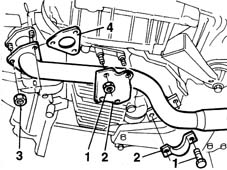

1076B58 exhaust pipe attachment to engine seal/s - replace
- Path
- Procedures > 10 ENGINE UNIT > 1076 EXHAUST PIPES AND SILENCERS > 1076B exhaust pipes and silencers > 1076B58 exhaust pipe attachment to engine seal/s - replace
- Kind
- repair procedure (removal / refitting; the operation number is the code)
- Applies to
- all engines; all production periods
- Interactive page
- https://sloeber94.github.io/elrnDB-fMltpl/en/#/2891294
Applies to: engines: 1.6 16v; all production periods
 Removing
Removing
 Refitting
Refitting1076A74 heat shield for exhaust pipe attachment to manifold - r r
1076B50 exhaust pipe attachment to engine - r + r
Recover the gasket between exhaust pipe and manifold.
Applies to: engines: 1.6 16v; all production periods
Refitting
RemovingFit a new gasket between exhaust pipe and engine.
1076B50 exhaust pipe attachment to engine - r + r
1076A74 heat shield for exhaust pipe attachment to manifold - r r
Applies to: engines: 1.9 JTD 8V; all production periods
Removing
RefittingPlace the car on a ramp.
1. Undo the nuts securing the reinforcement brackets on the oil sump and engine central mount.
2. Remove the reinforcement brackets.
3. Undo the nuts securing the exhaust pipe to the manifold.
4. Recover the gasket betweem exhaust pipe and manifold.

Applies to: engines: 1.9 JTD 8V; all production periods
Refitting
RemovingFit the exhaust pipe gasket.
Tighten the nuts securing the exhaust pipe to the manifold.
 | Fastening | Component | Ø | Value (daNm) |
|---|---|---|---|---|
- | Nut | EXHAUST PIPE TO ENGINE | M8 | 3.2 |
Tighten the nuts securing the reinforcement brackets to the studs on the oil sump.
| Fastening | Component | Ø | Value (daNm) |
|---|---|---|---|---|
- | Nut | EXHAUST PIPE TO ENGINE | M10 x 1.25 | 2.8 |
Tighten the nuts securing the reinforcement brackets to the studs on the engine central mounting.
| Fastening | Component | Ø | Value (daNm) |
|---|---|---|---|---|
- | Nut | EXHAUST PIPE TO ENGINE | M8 | 2.4 |
Remove the vehicle from the ramp.